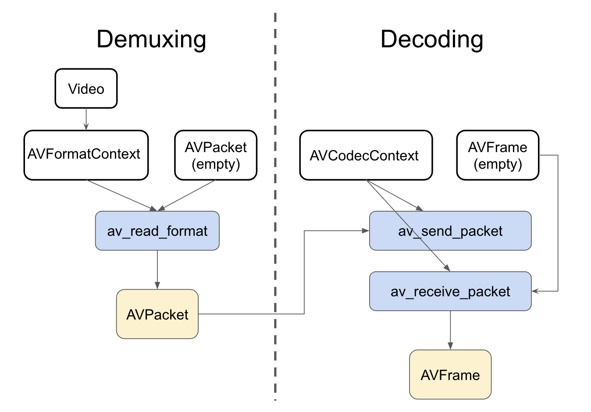

<!DOCTYPE html>
<html lang="en">

<!-- Head tag -->
<head>
    <meta charset="utf-8">
    <meta http-equiv="X-UA-Compatible" content="IE=edge">
    <meta name="google-site-verification" content="xBT4GhYoi5qRD5tr338pgPM5OWHHIDR6mNg1a3euekI" />
    <meta name="baidu-site-verification" content="093lY4ziMu" />
    <meta name="viewport" content="width=device-width, initial-scale=1, user-scalable=no">
    <meta name="description" content="Notes about technology, DevOps, programming, and database">
    <meta name="keyword"  content="AWS, golang, python, DevOps">
    <link rel="shortcut icon" href="/img/ironman-draw.png">
    <!-- Place this tag in your head or just before your close body tag. -->
    <script async defer src="https://buttons.github.io/buttons.js"></script>
    <!--<link href='http://fonts.googleapis.com/css?family=Montserrat:400,700' rel='stylesheet' type='text/css'>-->
    <title>
        
          FFmpeg libav decode 筆記 - Kakashi&#39;s Blog
        
    </title>

    <link rel="canonical" href="http://kkc.github.io/2019/01/12/ffmpeg-libav-decode-note/">

    <!-- Bootstrap Core CSS -->
    
<link rel="stylesheet" href="/css/bootstrap.min.css">


    <!-- Custom CSS --> 
    
        
<link rel="stylesheet" href="/css/dusign-light.css">

        
<link rel="stylesheet" href="/css/dusign-common-light.css">

        
<link rel="stylesheet" href="/css/font-awesome.css">

        
<link rel="stylesheet" href="/css/toc.css">

        <!-- background effects end -->
    
    
    <!-- Pygments Highlight CSS -->
    
<link rel="stylesheet" href="/css/highlight.css">


    
<link rel="stylesheet" href="/css/widget.css">


    
<link rel="stylesheet" href="/css/rocket.css">


    
<link rel="stylesheet" href="/css/signature.css">


    
<link rel="stylesheet" href="/css/fonts.googleapis.css">


    <link rel="stylesheet" href="//cdn.bootcss.com/font-awesome/4.3.0/css/font-awesome.min.css">

    <!-- photography -->
    
<link rel="stylesheet" href="/css/photography.css">


    <!-- ga & ba script hoook -->
    <script></script>
<meta name="generator" content="Hexo 4.2.1"></head>


<!-- hack iOS CSS :active style -->
<body ontouchstart="">

    <!-- background effects start -->
    
    <!-- background effects end -->

	<!-- Modified by Yu-Hsuan Yen -->
<!-- Post Header -->
<style type="text/css">
    header.intro-header{
        
            
                background-image: linear-gradient(rgba(0, 0, 0, 0.3), rgba(0, 0, 0, 0.3)), url('thomas-william-250918-unsplash.jpg')
                /*post*/
            
        
    }
    
</style>

<header class="intro-header" >
    <!-- Signature -->
    <div id="signature">
        <div class="container">
            <div class="row">
                <div class="col-lg-8 col-lg-offset-2 col-md-10 col-md-offset-1">
                
                    <div class="post-heading">
                        <div class="tags">
                            
                              <a class="tag" href="/tags/#ffmpeg" title="ffmpeg">ffmpeg</a>
                            
                        </div>
                        <h1>FFmpeg libav decode 筆記</h1>
                        <h2 class="subheading">一些基本知識</h2>
                        <span class="meta">
                            Posted by Kakashi on
                            2019-01-12
                        </span>

                        

                    </div>
                

                </div>
            </div>
        </div>      
    </div>

    
</header>

	
    <!-- Navigation -->
<nav class="navbar navbar-default navbar-custom navbar-fixed-top">
    <div class="container-fluid">
        <!-- Brand and toggle get grouped for better mobile display -->
        <div class="navbar-header page-scroll">
            <button type="button" class="navbar-toggle">
                <span class="sr-only">Toggle navigation</span>
                <span class="icon-bar"></span>
                <span class="icon-bar"></span>
                <span class="icon-bar"></span>
            </button>
            <a class="navbar-brand" href="/">Kakashi&#39;s Notes</a>
        </div>

        <!-- Collect the nav links, forms, and other content for toggling -->
        <!-- Known Issue, found by Hux:
            <nav>'s height woule be hold on by its content.
            so, when navbar scale out, the <nav> will cover tags.
            also mask any touch event of tags, unfortunately.
        -->
        <div id="huxblog_navbar">
            <div class="navbar-collapse">
                <ul class="nav navbar-nav navbar-right">
                    <li>
                        <a href="/">Home</a>
                    </li>

                    

                        
                    

                        
                        <li>
                            <a href="/tags/">Tags</a>
                        </li>
                        
                    

                        
                        <li>
                            <a href="/archive/">Archives</a>
                        </li>
                        
                    

                    <li>
                        <a href="/atom.xml">Subscribe</a>
                    </li>
                </ul>
            </div>
        </div>
        <!-- /.navbar-collapse -->
    </div>
    <!-- /.container -->
</nav>
<script>
    // Drop Bootstarp low-performance Navbar
    // Use customize navbar with high-quality material design animation
    // in high-perf jank-free CSS3 implementation
    var $body   = document.body;
    var $toggle = document.querySelector('.navbar-toggle');
    var $navbar = document.querySelector('#huxblog_navbar');
    var $collapse = document.querySelector('.navbar-collapse');

    $toggle.addEventListener('click', handleMagic)
    function handleMagic(e){
        if ($navbar.className.indexOf('in') > 0) {
        // CLOSE
            $navbar.className = " ";
            // wait until animation end.
            setTimeout(function(){
                // prevent frequently toggle
                if($navbar.className.indexOf('in') < 0) {
                    $collapse.style.height = "0px"
                }
            },400)
        }else{
        // OPEN
            $collapse.style.height = "auto"
            $navbar.className += " in";
        }
    }
</script>


    <!-- Main Content -->
    <!-- Post Content -->
<article>
    <div class="container">
        <div class="row">

            <!-- Post Container -->
            <div class="
                col-lg-8 col-lg-offset-2
                col-md-10 col-md-offset-1
                post-container">

                <h1 id="Preface"><a href="#Preface" class="headerlink" title="Preface"></a>Preface</h1><p>身處在一間做 Surveillance 的公司，一定要熟悉下 FFmpeg 怎麼使用，FFmpeg 真的是蠻偉大的，應該全世界大部分需要處理影音的公司都對他不陌生，FFmpeg 是一個跨平台免費又開源的影音處理方案，採用 LGPL 或是 GPL 的 License，單純使用 ffmpeg 或是 ffprobe command 就可以做到很多加解碼轉檔等等的事情，非常的方便！</p>
<p>FFmpeg 也有提供 library 給開發者呼叫並且整合在自己的程式中，這篇筆記基本上記錄了下怎麼使用它來做基本的解碼，FFmpeg 包含以下幾個 lib (只列了幾個我常用的)</p>
<p>Libavcodec: encode/decode 的 framework 包含很多影音的加解碼器<br>Libavformat: 對 video 的封裝<br>Libswscale: 圖像縮放，顏色空間轉換</p>
<h1 id="Intro"><a href="#Intro" class="headerlink" title="Intro"></a>Intro</h1><p>基本上這篇心得，很多來自這篇文章<a href="https://github.com/leandromoreira/ffmpeg-libav-tutorial" target="_blank" rel="noopener">https://github.com/leandromoreira/ffmpeg-libav-tutorial</a>的內容，非常推薦想要學 FFmpeg 的同學作為參考，算是我找過網路上寫的最平易近人的說明。而這篇文章主要會紀錄 video 相關的心得，因為我對音訊還沒那麼熟。</p>
<h1 id="Video"><a href="#Video" class="headerlink" title="Video"></a>Video</h1><p>Video 其實可以視為一堆圖片的集合，小時候都有玩過一種東西，就是一本書上面有很多圖，在快速翻動的時候，就能感覺到上面的東西在移動。</p>
<h1 id="Codec"><a href="#Codec" class="headerlink" title="Codec"></a>Codec</h1><p>Codec 的工作就是把資料縮小，這邊給個概念，如果我們把數以百萬計的圖片放進一個電影檔裡面，那這個檔案勢必非常的大，來做個簡單的數學：</p>
<p>讓我們拿個高清的影片，解析度為 1080 x 1920，然後每個 pixel 都用 3 bytes 去記錄他的顏色資訊 (24 bit color，這裡可以表達 16,777,216 不同的顏色，我們的眼睛好厲害)，這個影片是 24 fps (frame per second)，然後長度為 30 分鐘，我們做個簡單的數學計算:</p>
<figure class="highlight angelscript"><table><tr><td class="gutter"><pre><span class="line">1</span><br><span class="line">2</span><br><span class="line">3</span><br><span class="line">4</span><br></pre></td><td class="code"><pre><span class="line">toppf = <span class="number">1080</span> * <span class="number">1920</span> <span class="comment">//total_of_pixels_per_frame</span></span><br><span class="line">cpp = <span class="number">3</span>             <span class="comment">//cost_per_pixel</span></span><br><span class="line">tis = <span class="number">30</span> * <span class="number">60</span>       <span class="comment">//time_in_seconds</span></span><br><span class="line">fps = <span class="number">24</span>            <span class="comment">//frames_per_second</span></span><br></pre></td></tr></table></figure>
<p>需要的儲存空間 = <code>tis * fps * toppf * cpp</code></p>
<p>簡單的計算後發現，這個電影檔居然要花我們 <code>250.28GB</code> 的空間，還有 <code>1.11Gpbs</code> 的流量，這也是為什麼我們需要 codec 來幫助我們壓縮檔案。</p>
<h1 id="Container"><a href="#Container" class="headerlink" title="Container"></a>Container</h1><p>Container 可以視為一個 wrapper，裡面包含了不同的 stream (通常是 video 和 audio)，然後這個 container 通常也提供了 Metadata 像是 video title , resolution 之類的資訊，</p>
<p>這邊加點我個人的筆記，mp4 和 mpeg4 video data，就是一種 container 和 stream 的概念，也是瓶子和內容物，mp4 這個瓶子一般來說都是裝 standard mpeg4 video codec 的資料，但是如果硬拿來裝其他的東西也可以，只是應該沒人會這樣做。</p>
<h1 id="FFmpeg-Libav-Architecture"><a href="#FFmpeg-Libav-Architecture" class="headerlink" title="FFmpeg Libav Architecture"></a>FFmpeg Libav Architecture</h1><p>要知道怎麼 encode/decode 得先了解下 libav 的 architecture</p>
<p></p>
<ol>
<li>讀取 media file 到 <code>AVFormatContext</code> 這個 compoenent 裡面，基本上這個動作其實只會讀取檔案的 header 而已，而經由這個 header 我們可以知道這包 container 裡面有多少 stream 。</li>
<li>如果我們要讀取 Container 裡面的 stream 的話，libav 會把它封裝在 <code>AVStream</code> 這個 component 內，我們就可以經由這個 component 讀取到 stream 的資料。</li>
<li>假設我們的 Container 裡面有兩個 stream ，一個是 video (encoded by H264 CODEC) 另外一個是 audio (encoded by AAC CODEC)，我們可以從中讀取一小段資料進 <code>AVPacket</code> 這個 Compoenent。</li>
<li>資料在 <code>AVPacket</code> 中還是被 <em>encode</em> 的狀態，這時候我們會需要 <code>AVCodec</code> 的幫忙，將 packet 裡面的資料 decode 出來到 <code>AVFrame</code> 中，我們就可以拿到 uncompressed frame。</li>
</ol>
<h2 id="Detailed-Decoding-Flow"><a href="#Detailed-Decoding-Flow" class="headerlink" title="Detailed Decoding Flow"></a>Detailed Decoding Flow</h2><p>主要的範例程式可以參考<a href="https://github.com/leandromoreira/ffmpeg-libav-tutorial/blob/master/0_hello_world.c" target="_blank" rel="noopener">hello_world.c</a>，接下來我會對其中比較重要的幾個 step 做個簡單的筆記。</p>
<ol>
<li><p>一開始要先對 <code>AVFormatContext</code> 這個結構配置記憶體，經由這個結構我們才能得到 container 的 format。</p>
 <figure class="highlight abnf"><table><tr><td class="gutter"><pre><span class="line">1</span><br></pre></td><td class="code"><pre><span class="line">AVFormatContext *pFormatContext = avformat_alloc_context()<span class="comment">;</span></span><br></pre></td></tr></table></figure>
</li>
<li><p>接著使用 <code>avformat_open_input</code> 去將檔案讀進到我們之前配置好的 <code>AVFormatContext</code>，這個 function 最後有兩個 arguments，第一個是 <code>AVInputFormat</code>，傳入 <code>NULL</code> 他會自動猜測格式，第二個是 <code>AVDictionary</code> 通常是拿來配置 demuxer 的參數。</p>
 <figure class="highlight sas"><table><tr><td class="gutter"><pre><span class="line">1</span><br></pre></td><td class="code"><pre><span class="line">avformat_open<span class="meta">_input(</span><span class="variable">&amp;pFormatContext</span>, <span class="meta">filename</span>, <span class="meta">NULL</span>, <span class="meta">NULL</span>);</span><br></pre></td></tr></table></figure>
</li>
<li><p>讀進 <code>AVFormatContext</code> 後，可以印出 container 的 format 和 duration。 </p>
 <figure class="highlight xl"><table><tr><td class="gutter"><pre><span class="line">1</span><br></pre></td><td class="code"><pre><span class="line"><span class="function"><span class="title">printf</span>("Format %s, duration %lld us", pFormatContext-&gt;</span><span class="function"><span class="title">iformat</span>-&gt;</span><span class="function"><span class="title">long_name</span>, pFormatContext-&gt;</span>duration);</span><br></pre></td></tr></table></figure>
</li>
<li><p>使用 <code>avformat_find_stream_info</code> 拿來讀取 media file 裡面的 data ， 在呼叫完 <code>avformat_find_stream_info(pFormatContext,  NULL);</code> 這個方法後， 才能從 <code>pFormatContext-&gt;nb_streams</code> 裡面得到 context 有多少個 stream，接著可以用 pFormatContext-&gt;streams[i] 得到不同的 stream (<code>AVStream</code>)。</p>
 <figure class="highlight angelscript"><table><tr><td class="gutter"><pre><span class="line">1</span><br><span class="line">2</span><br><span class="line">3</span><br><span class="line">4</span><br></pre></td><td class="code"><pre><span class="line"><span class="keyword">for</span> (<span class="built_in">int</span> i = <span class="number">0</span>; i &lt; pFormatContext-&gt;nb_streams; i++)</span><br><span class="line">&#123;</span><br><span class="line">  <span class="comment">// pFormatContext-&gt;streams[i]</span></span><br><span class="line">&#125;</span><br></pre></td></tr></table></figure>
</li>
<li><p>因為每個 stream 都有可能是用不同的 codec 壓縮的，我們可以經由 <code>AVCodecParameters *pLocalCodecParameters = pFormatContext-&gt;streams[i]-&gt;codecpar;</code> 從每個 stream 中取得對應的 <code>AVCodecParameters</code></p>
</li>
<li><p>利用剛剛取得的 parameter 和 <code>avcodec_find_decoder</code> function 找到對應的 <code>AVCodec</code></p>
 <figure class="highlight reasonml"><table><tr><td class="gutter"><pre><span class="line">1</span><br></pre></td><td class="code"><pre><span class="line">AVCodec *pCodec = avcodec<span class="constructor">_find_decoder(<span class="params">pLocalCodecParameters</span>-&gt;<span class="params">codec_id</span>)</span>;</span><br></pre></td></tr></table></figure>
</li>
<li><p>取得 Codec 後，我們需要配置記憶體給 <code>AVCodecContext</code>，這個結構是等等要拿來 encode/decode 用的，我們另外還需要將 codec 的 parameter 也複製到這個 context 中，在我們配置好 codec 的 context 後，還需要使用 <code>avcodec_open2</code> 才能真的在之後使用這個 context。 </p>
 <figure class="highlight reasonml"><table><tr><td class="gutter"><pre><span class="line">1</span><br><span class="line">2</span><br><span class="line">3</span><br></pre></td><td class="code"><pre><span class="line">AVCodecContext *pCodecContext = avcodec<span class="constructor">_alloc_context3(<span class="params">pCodec</span>)</span>;</span><br><span class="line">avcodec<span class="constructor">_parameters_to_context(<span class="params">pCodecContext</span>, <span class="params">pCodecParameters</span>)</span>;</span><br><span class="line">avcodec<span class="constructor">_open2(<span class="params">pCodecContext</span>, <span class="params">pCodec</span>, NULL)</span>;</span><br></pre></td></tr></table></figure>
</li>
<li><p>我們需要把 packet (<code>AVPacket</code>) 從 stream 讀出來後，然後 decode 成一張張的 frame (<code>AVFrame</code>)</p>
 <figure class="highlight gcode"><table><tr><td class="gutter"><pre><span class="line">1</span><br><span class="line">2</span><br><span class="line">3</span><br></pre></td><td class="code"><pre><span class="line"><span class="comment">// 配置記憶體</span></span><br><span class="line">AVPacket *pPacket = av_packet_alloc<span class="comment">()</span>;</span><br><span class="line">AVFrame *pFrame = av_frame_alloc<span class="comment">()</span>;</span><br></pre></td></tr></table></figure>
<p> 這邊我們要使用 <code>av_read_frame</code> 這個 function 將 video_streaming 的資料從 <code>AVFormatContext</code> 中讀出來到 packet 中</p>
 <figure class="highlight reasonml"><table><tr><td class="gutter"><pre><span class="line">1</span><br><span class="line">2</span><br><span class="line">3</span><br><span class="line">4</span><br><span class="line">5</span><br></pre></td><td class="code"><pre><span class="line"><span class="keyword">while</span> (av<span class="constructor">_read_frame(<span class="params">pFormatContext</span>, <span class="params">pPacket</span>)</span> &gt;= <span class="number">0</span>) &#123;</span><br><span class="line">    avcodec<span class="constructor">_send_packet(<span class="params">pCodecContext</span>, <span class="params">pPacket</span>)</span>;</span><br><span class="line">    avcodec<span class="constructor">_receive_frame(<span class="params">pCodecContext</span>, <span class="params">pFrame</span>)</span></span><br><span class="line">    <span class="comment">//...</span></span><br><span class="line">&#125;</span><br></pre></td></tr></table></figure>
<p> 接著將 raw packet (compressed frame) 送進 decoder，然後把 raw data frame (uncompressed frame) 取出來，這兩組 API <code>avcodec_send_packet</code> &amp; <code>avcodec_receive_frame</code> 需要互相搭配使用，使用 <code>avcodec_send_packet</code> 將 packet 送到 <code>AVCodecContext</code> 中，然後透過 <code>avcodec_receive_frame</code> 將解碼後的 frame 拿出來，然後要注意一點是 <code>avcodec_send_packet</code> 和 <code>avcodec_receive_frame</code> 並不一定是一對一的關係，有時候需要多送幾個 packet 讓 <code>AVCodecContext</code> 緩存幾張 frame 的 data，而這邊拿到的 <code>pFrame-&gt;data</code> 的格式是 (YCbCr)[<a href="https://en.wikipedia.org/wiki/YCbCr]，如果想要轉成" target="_blank" rel="noopener">https://en.wikipedia.org/wiki/YCbCr]，如果想要轉成</a> RGB 的話還需要使用到 <code>SwsContext</code> 之類的方法。</p>
</li>
<li><p>接著我們就可以印出取得的資訓像是 frame_number 或是 pts 等等印出來驗證摟</p>
 <figure class="highlight xl"><table><tr><td class="gutter"><pre><span class="line">1</span><br><span class="line">2</span><br><span class="line">3</span><br><span class="line">4</span><br><span class="line">5</span><br><span class="line">6</span><br><span class="line">7</span><br><span class="line">8</span><br><span class="line">9</span><br><span class="line">10</span><br></pre></td><td class="code"><pre><span class="line">printf(</span><br><span class="line">    <span class="string">"Frame %c (%d) pts %d dts %d key_frame %d [coded_picture_number %d, display_picture_number %d]"</span>,</span><br><span class="line">    <span class="function"><span class="title">av_get_picture_type_char</span>(pFrame-&gt;</span>pict_type),</span><br><span class="line">    <span class="function"><span class="title">pCodecContext</span>-&gt;</span>frame_number,</span><br><span class="line">    <span class="function"><span class="title">pFrame</span>-&gt;</span>pts,</span><br><span class="line">    <span class="function"><span class="title">pFrame</span>-&gt;</span>pkt_dts,</span><br><span class="line">    <span class="function"><span class="title">pFrame</span>-&gt;</span>key_frame,</span><br><span class="line">    <span class="function"><span class="title">pFrame</span>-&gt;</span>coded_picture_number,</span><br><span class="line">    <span class="function"><span class="title">pFrame</span>-&gt;</span>display_picture_number</span><br><span class="line">);</span><br></pre></td></tr></table></figure>
</li>
</ol>
<p>針對 AVPacket 和 AVFrame，我另外畫了一張流程圖</p>
<p></p>
<h1 id="心得"><a href="#心得" class="headerlink" title="心得"></a>心得</h1><p>ffmpeg 經過多次改版，API 和文件其實變得比較人性化一點，網路上也不像之前資料那麼少了，經由這次的練習也找到了不少有用的資料，都列在底下的 Reference 供大家參考，如果有哪邊寫錯的，還請大家指正了。</p>
<h1 id="Reference"><a href="#Reference" class="headerlink" title="Reference"></a>Reference</h1><ol>
<li><a href="http://slhck.info/ffmpeg-encoding-course/" target="_blank" rel="noopener">ffmpeg-encoding-course</a></li>
<li><a href="https://github.com/leandromoreira/ffmpeg-libav-tutorial" target="_blank" rel="noopener">https://github.com/leandromoreira/ffmpeg-libav-tutorial</a></li>
<li><a href="http://leixiaohua1020.github.io/#ffmpeg-development-examples" target="_blank" rel="noopener">http://leixiaohua1020.github.io/#ffmpeg-development-examples</a></li>
<li><a href="https://ffmpeg.org/doxygen/4.0/group__lavf__decoding.html#details" target="_blank" rel="noopener">https://ffmpeg.org/doxygen/4.0/group__lavf__decoding.html#details</a></li>
<li><a href="https://ffmpeg.org/doxygen/4.0/group__lavc__decoding.html" target="_blank" rel="noopener">https://ffmpeg.org/doxygen/4.0/group__lavc__decoding.html</a> </li>
</ol>

                
                <hr>
                <!-- Pager -->
                <ul class="pager">
                    
                    <li class="previous">
                        <a href="/2019/02/10/prometheus-operator-with-thanos/" data-toggle="tooltip" data-placement="top" title="Deploy Prometheus Operator With Thanos">&larr; Previous Post</a>
                    </li>
                    
                    
                    <li class="next">
                        <a href="/2018/10/04/EKS-notes/" data-toggle="tooltip" data-placement="top" title="EKS 的一些筆記">Next Post &rarr;</a>
                    </li>
                    
                </ul>

                <!-- tip start -->
                

                
                <!-- tip end -->

                <!-- Music start-->
                
                <!-- Music end -->

                <!-- Sharing -->
                
                <!-- Sharing -->

                <!-- gitment start -->
                
                <!-- gitment end -->

                <!-- 来必力City版安装代码 -->
                
                <!-- City版安装代码已完成 -->

                <!-- disqus comment start -->
                
                <div class="comment">
                    <div id="disqus_thread" class="disqus-thread"></div>
                </div>
                
                <!-- disqus comment end -->
            </div>
            
            <!-- Tabe of Content -->
            <!-- Table of Contents -->

    
      
        <aside id="sidebar">
          <div id="toc" class="toc-article">
          <strong class="toc-title">Contents</strong>
          
            
              <ol class="toc-nav"><li class="toc-nav-item toc-nav-level-1"><a class="toc-nav-link" href="#Preface"><span class="toc-nav-number">1.</span> <span class="toc-nav-text">Preface</span></a></li><li class="toc-nav-item toc-nav-level-1"><a class="toc-nav-link" href="#Intro"><span class="toc-nav-number">2.</span> <span class="toc-nav-text">Intro</span></a></li><li class="toc-nav-item toc-nav-level-1"><a class="toc-nav-link" href="#Video"><span class="toc-nav-number">3.</span> <span class="toc-nav-text">Video</span></a></li><li class="toc-nav-item toc-nav-level-1"><a class="toc-nav-link" href="#Codec"><span class="toc-nav-number">4.</span> <span class="toc-nav-text">Codec</span></a></li><li class="toc-nav-item toc-nav-level-1"><a class="toc-nav-link" href="#Container"><span class="toc-nav-number">5.</span> <span class="toc-nav-text">Container</span></a></li><li class="toc-nav-item toc-nav-level-1"><a class="toc-nav-link" href="#FFmpeg-Libav-Architecture"><span class="toc-nav-number">6.</span> <span class="toc-nav-text">FFmpeg Libav Architecture</span></a><ol class="toc-nav-child"><li class="toc-nav-item toc-nav-level-2"><a class="toc-nav-link" href="#Detailed-Decoding-Flow"><span class="toc-nav-number">6.1.</span> <span class="toc-nav-text">Detailed Decoding Flow</span></a></li></ol></li><li class="toc-nav-item toc-nav-level-1"><a class="toc-nav-link" href="#心得"><span class="toc-nav-number">7.</span> <span class="toc-nav-text">心得</span></a></li><li class="toc-nav-item toc-nav-level-1"><a class="toc-nav-link" href="#Reference"><span class="toc-nav-number">8.</span> <span class="toc-nav-text">Reference</span></a></li></ol>
            
          
          </div>
        </aside>
      
    

                
            <!-- Sidebar Container -->
            <div class="
                col-lg-8 col-lg-offset-2
                col-md-10 col-md-offset-1
                sidebar-container">

                <!-- Featured Tags -->
                
                <section>
                    <!-- no hr -->
                    <h5><a href="/tags/">FEATURED TAGS</a></h5>
                    <div class="tags">
                       
                          <a class="tag" href="/tags/#ffmpeg" title="ffmpeg">ffmpeg</a>
                        
                    </div>
                </section>
                

                <!-- Friends Blog -->
                
                <hr>
                <h5>FRIENDS</h5>
                <ul class="list-inline">

                    
                </ul>
                
            </div>
        </div>
    </div>
</article>


<!-- disqus embedded js code start (one page only need to embed once) -->
<script type="text/javascript">
    /* * * CONFIGURATION VARIABLES * * */
    var disqus_shortname = "kkcliu";
    var disqus_identifier = "http://kkc.github.io/2019/01/12/ffmpeg-libav-decode-note/";
    var disqus_url = "http://kkc.github.io/2019/01/12/ffmpeg-libav-decode-note/";

    (function() {
        var dsq = document.createElement('script'); dsq.type = 'text/javascript'; dsq.async = true;
        dsq.src = '//' + disqus_shortname + '.disqus.com/embed.js';
        (document.getElementsByTagName('head')[0] || document.getElementsByTagName('body')[0]).appendChild(dsq);
    })();
</script>
<!-- disqus embedded js code start end -->


<!-- async load function -->
<script>
    function async(u, c) {
      var d = document, t = 'script',
          o = d.createElement(t),
          s = d.getElementsByTagName(t)[0];
      o.src = u;
      if (c) { o.addEventListener('load', function (e) { c(null, e); }, false); }
      s.parentNode.insertBefore(o, s);
    }
</script>
<!-- anchor-js, Doc:http://bryanbraun.github.io/anchorjs/ -->
<script>
    async("https://cdn.bootcss.com/anchor-js/1.1.1/anchor.min.js",function(){
        anchors.options = {
          visible: 'hover',
          placement: 'left',
          icon: 'ℬ'
        };
        anchors.add().remove('.intro-header h1').remove('.subheading').remove('.sidebar-container h5');
    })
</script>


<style  type="text/css">
    /* place left on bigger screen */
    @media all and (min-width: 800px) {
        .anchorjs-link{
            position: absolute;
            left: -0.75em;
            font-size: 1.1em;
            margin-top : -0.1em;
        }
    }
</style>


    <!-- Footer -->
    <!-- Footer -->
<footer>
    <div class="container">
        <div class="row">
            <div class="col-lg-8 col-lg-offset-2 col-md-10 col-md-offset-1">
                <ul class="list-inline text-center">

                
                    <li>
                        <a target="_blank"  href="https://github.com/kkcliu">
                            <span class="fa-stack fa-lg">
                                <i class="fa fa-circle fa-stack-2x"></i>
                                <i class="fa fa-github fa-stack-1x fa-inverse"></i>
                            </span>
                        </a>
                    </li>
                

                
                    <li>
                        <a target="_blank" href="https://twitter.com/kakashiliu">
                            <span class="fa-stack fa-lg">
                                <i class="fa fa-circle fa-stack-2x"></i>
                                <i class="fa fa-twitter fa-stack-1x fa-inverse"></i>
                            </span>
                        </a>
                    </li>
                

                
                    <li>
                        <a target="_blank" href="https://www.facebook.com/kkcliu">
                            <span class="fa-stack fa-lg">
                                <i class="fa fa-circle fa-stack-2x"></i>
                                <i class="fa fa-facebook fa-stack-1x fa-inverse"></i>
                            </span>
                        </a>
                    </li>
                

                

                

                
                    <li>
                        <a target="_blank"  href="https://www.linkedin.com/in/kkcliu">
                            <span class="fa-stack fa-lg">
                                <i class="fa fa-circle fa-stack-2x"></i>
                                <i class="fa fa-linkedin fa-stack-1x fa-inverse"></i>
                            </span>
                        </a>
                    </li>
                

                

                </ul>
                <p class="copyright text-muted">
                    Copyright &copy; Kakashi 2021 
                    <br>
                    Powered by 
                    <a href="https://github.com/dusign/hexo-theme-snail" target="_blank" rel="noopener">
                        <i>hexo-theme-snail</i>
                    </a> | 
                    <iframe name="star" style="margin-left: 2px; margin-bottom:-5px;" frameborder="0" scrolling="0"
                        width="100px" height="20px"
                        src="https://ghbtns.com/github-btn.html?user=dusign&repo=hexo-theme-snail&type=star&count=true">
                    </iframe>
                </p>
            </div>
        </div>
    </div>

</footer>

<!-- jQuery -->

<script src="/js/jquery.min.js"></script>


<!-- Bootstrap Core JavaScript -->

<script src="/js/bootstrap.min.js"></script>


<!-- Custom Theme JavaScript -->

<script src="/js/hux-blog.min.js"></script>


<!-- Search -->

<script src="/js/search.js"></script>


<!-- async load function -->
<script>
    function async(u, c) {
      var d = document, t = 'script',
          o = d.createElement(t),
          s = d.getElementsByTagName(t)[0];
      o.src = u;
      if (c) { o.addEventListener('load', function (e) { c(null, e); }, false); }
      s.parentNode.insertBefore(o, s);
    }
</script>


<!-- jquery.tagcloud.js -->
<script>
    // only load tagcloud.js in tag.html
    if($('#tag_cloud').length !== 0){
        async("http://kkc.github.io/js/jquery.tagcloud.js",function(){
            $.fn.tagcloud.defaults = {
                //size: {start: 1, end: 1, unit: 'em'},
                color: {start: '#bbbbee', end: '#0085a1'},
            };
            $('#tag_cloud a').tagcloud();
        })
    }
</script>

<!--fastClick.js -->
<script>
    async("https://cdn.bootcss.com/fastclick/1.0.6/fastclick.min.js", function(){
        var $nav = document.querySelector("nav");
        if($nav) FastClick.attach($nav);
    })
</script>


<!-- Google Analytics -->


<script>
    // dynamic User by Hux
    var _gaId = 'UA-64932988-1';
    var _gaDomain = 'kkc.github.io';

    // Originial
    (function(i,s,o,g,r,a,m){i['GoogleAnalyticsObject']=r;i[r]=i[r]||function(){
    (i[r].q=i[r].q||[]).push(arguments)},i[r].l=1*new Date();a=s.createElement(o),
    m=s.getElementsByTagName(o)[0];a.async=1;a.src=g;m.parentNode.insertBefore(a,m)
    })(window,document,'script','//www.google-analytics.com/analytics.js','ga');

    ga('create', _gaId, _gaDomain);
    ga('send', 'pageview');
</script>


<!-- Baidu Tongji -->


<!-- Search -->


<!-- busuanzi -->
<script async src="//busuanzi.ibruce.info/busuanzi/2.3/busuanzi.pure.mini.js"></script>


	<a id="rocket" href="#top" class=""></a>
	<script type="text/javascript" src="/js/totop.js?v=1.0.0" async=""></script>
    <script type="text/javascript" src="/js/toc.js?v=1.0.0" async=""></script>

    

    <!--<script size="50" alpha='0.3' zIndex="-999" src="/js/ribbonStatic.js"></script>-->
    
        <script src="/js/ribbonDynamic.js"></script>
    
</body>

</html>
